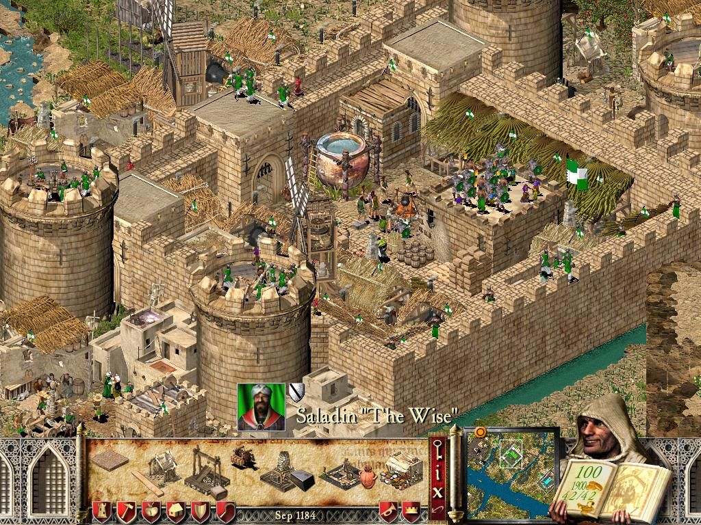
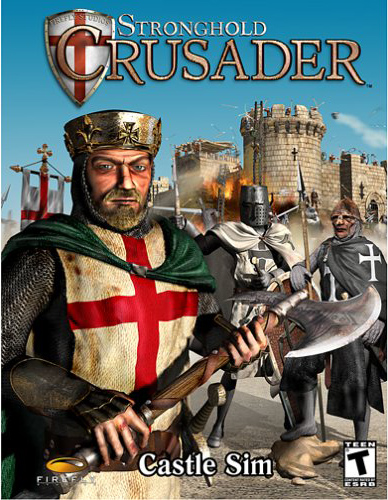
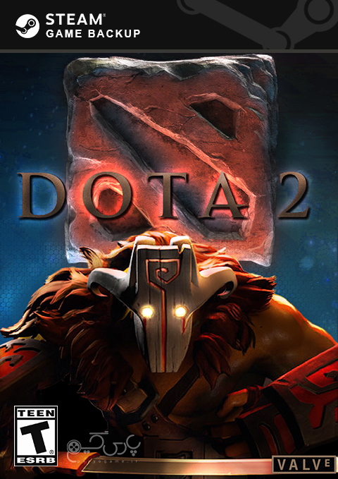
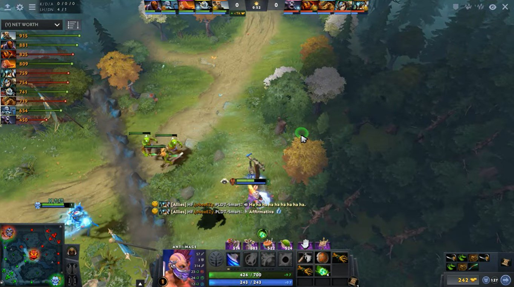
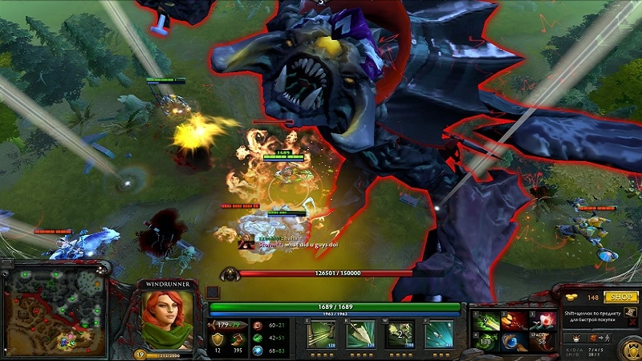
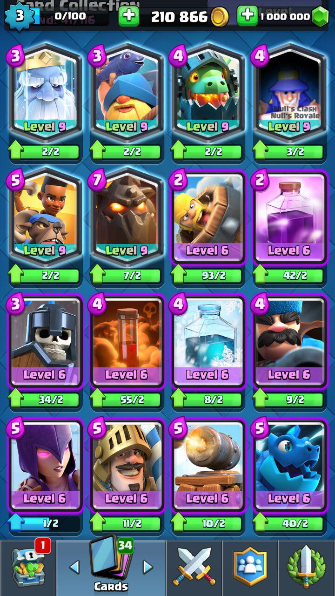
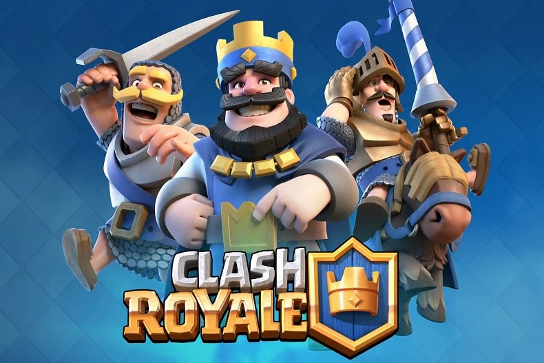
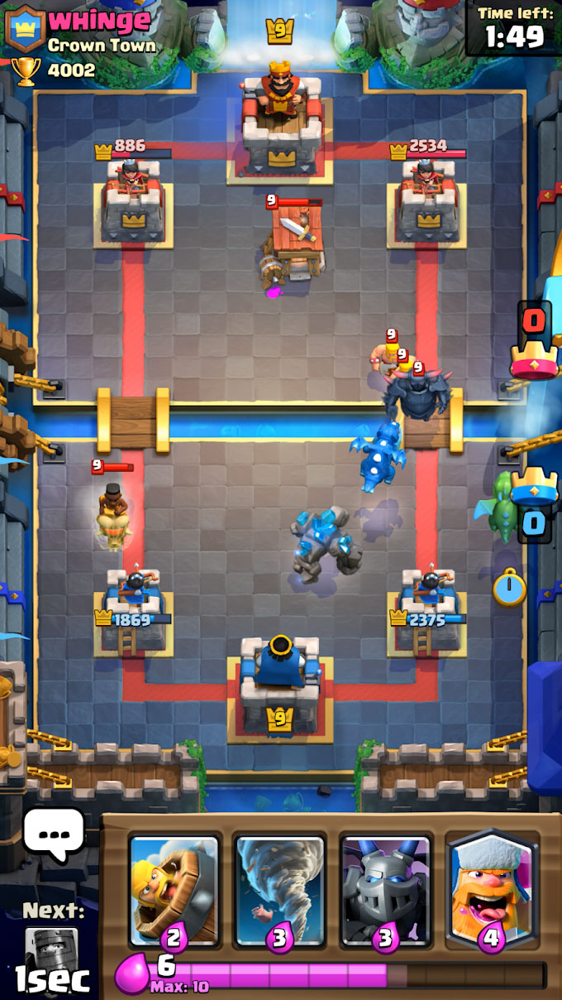

strategic
بازی های استراتژی همواره یکی از قدیمی ترین و پرطرفدار سبک ها در بین بازی های ویدیویی بوده اند. سبکی که بیشتر گیمر ها برای یک بار هم که شده آن را تجربه کرده اند. یا حداقل نام یکی از بازی های معروف این سبک مثل: Command & Conquer: Generals ,Stranghold ,Age of Empires ,Civilization یا سری بازی های Total War به گوشش خورده است. بازی هایی که یادآور خاطراتی خوش برای بسیاری از گیمرهای قدیمی و البته جدید این سبک است.
Crusader1
قلعه: جنگهای صلیبی (به انگلیسی: Stronghold: Crusader) یکی از بازیهای سری استراتژی قلعه، ساخت استودیوی فایرفلای بود که در سال ۲۰۰۲ منتشر شد. این بازی دارای گرافیک بالایی نبود اما طرفداران زیادی پیدا کرد و با استقبال زیادی روبرو شد. این بازی توسط گروه نرمافزاری دارینوس به فارسی دوبله شد.


Dota2
بازی DOTA 2 محصولی جذاب و پرهوادار از کمپانی Valve است که در سبک استراتژی، اکشن و MOBA ساخته و به صورت رایگان (Free to Play) عرضه شده است. نسخه آپدیت شده این بازی برای سال 2017 به تازگی عرضه شده که در این پست برای شما قرار گرفته است.
از شاهکار های بازی های آنلاین که در پرونده محصولات Valve همیشه از آن به عنوان نتیجه ای درخشان یاد می شود، بازی پرطرفدار و زیبای Dota 2 است.



GENERAL1
command and conquer generals بازی
یکی از بازی های بسیار عالی و خوش ساخت استودیو معروف الکترونیک آرتس است که هر گیمری را ساعت ها پشت میز کامپیوتر خود نشانده و با گیم پلی اکشن و نفس گیری که دارد فرد را مجذوب خود میکند. بازی فرمان تسخیر جنرال ها به دلیل این که بسیاری از بازیکنان ایرانی ها هنوز هم علاقه به بازی های سبک استراتژی دارند


Clash Royale
بازي پرطرفدار و فوق العاده زيباي استراتژيک از سوپرسل خالق بازي هاي محبوب است که براي سيستم عامل هاي مختلف عرضه شده است و نسخه اندرويدي اش تا به امروز بيش از 100.000.000 بار توسط کاربران اندرویدی سراسر جهان از گوگل پلي دريافت شده و از محبوب ترين ها به شمار مي رود! بازي Clash Royale – کلش رویال نيز همانند بازي کلش آف کلنز طراحي شده است و در ان شما با کاربران آنلاين سراسر جهان به رقابت مي پردازيد


